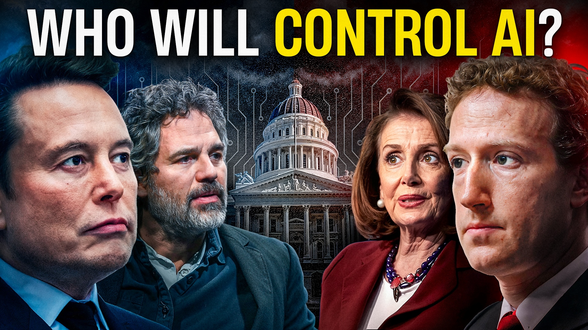

How a California bill sparked an unprecedented battle between tech titans, politicians, and activists over who controls our most transformative technology
A 30-minute documentary exploring California's groundbreaking AI safety bill, featuring exclusive interviews with key figures on both sides of a pivotal tech regulation debate that will shape our collective future.
SB-1047 documents the unprecedented political battle that erupted when California introduced the first major AI safety bill. At its center stands Governor Gavin Newsom, caught between two powerful coalitions fighting for control over humanity's most transformative technology.
On one side: State Senator Scott Wiener backed by AI safety researchers, Hollywood celebrities like Mark Ruffalo, and even Elon Musk. On the other: tech giants led by Mark Zuckerberg, venture capital powerhouse Marc Andreessen, and political heavyweight Nancy Pelosi.
Through exclusive access to key players, this documentary reveals the high-stakes lobbying war that unfolded both online and within Sacramento's Capitol corridors. Viewers will witness firsthand how powerful interests clash in determining how we govern AI before potentially catastrophic risks become reality.
With AI advancing at an unprecedented pace, SB-1047 offers a rare window into the power struggles that will define how we manage this transformative technology – and ultimately, our collective future.
California State Senator, SB-1047 bill sponsor
Director of Center for AI Safety, bill co-sponsor
Journalist featured in NY Times, only reporter covering SB-1047 fulltime
Bill SB-1047 first introduced by Senator Scott Wiener
Initial committee hearings with expert testimony
First major blowback on twitter.
Major tech industry lobbying campaign begins
Nancy Pelosi and eight members of congress write letters against SB-1047
AI company Anthropic and Elon Musk support the bill.
Bill passes California Senate and Assembly
Celebrity advocates join the campaign for regulation
Governor Newsom's decision
"SB-1047 provides the most compelling and balanced account of AI governance I've seen. It captures the nuance of this complex debate without sacrificing accessibility."
"Michaël Trazzi has created an essential document of one of the most important political battles of our time. This film should be required viewing for anyone concerned about the future of technology governance."
Michaël Trazzi is the founder of The Inside View, a platform dedicated to exploring AI developments through in-depth interviews with leading researchers and policymakers. With an audience of over 20,000 followers across YouTube and Twitter, his channel has garnered more than 300,000 views.
His first short film about AI risk reached 40,000 viewers with an exceptional 5% engagement rate (2,000 likes), demonstrating his ability to make complex AI topics accessible and engaging to broad audiences.
Film Editor
Editor for multiple Michael Moore documentaries and Wrestle, Emmy-nominated for editing
Additional Editor
Emmy-nominated editor with experience at HBO, CNN, and VICE
Archival Producer
Former head of Content at VICE with extensive documentary experience
Additional Editor
Documentary editor with 20 years of experience, previously editing a Netflix documentary
Motion Graphics
Award-winning Brooklyn-based 2D animator and motion graphics designer
SB-1047 received $120,000 in funding through Manifund from 30 different backers, demonstrating significant community interest and support. This grassroots funding approach has allowed the documentary to maintain editorial independence while tackling a politically charged subject.
Additional support has been provided by organizations committed to responsible AI governance and public understanding of emerging technologies.
The future of AI regulation affects us all. Be among the first to see this groundbreaking documentary and join the conversation about how we should govern our most powerful technology.
Upcoming ScreeningsMichaël Trazzi
Email: michael@theinsideview.ai
Website: theinsideview.ai